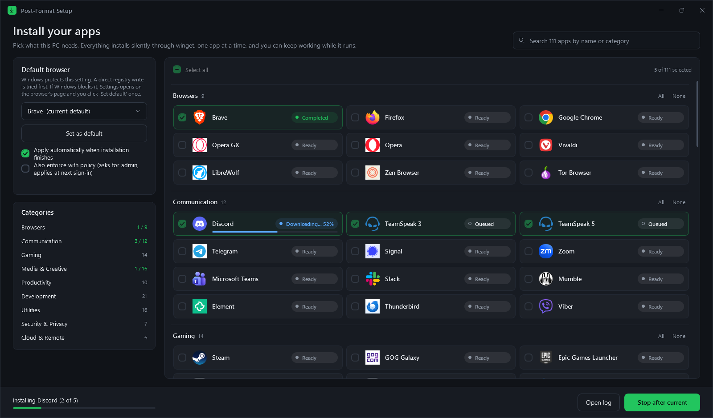

Zainstaluj z powrotem wszystkie aplikacje po świeżej instalacji Windowsa
Post-Format Setup to mały program na moment tuż po sformatowaniu komputera. Zaznaczasz aplikacje, których używasz, klikasz Install, a on pobiera je i instaluje jedną po drugiej, podczas gdy Ty zajmujesz się czymś innym. Bez szukania po stronach i bez klikania „Dalej” dwadzieścia razy.
Wszystko instaluje przez winget, menedżer pakietów wbudowany w Windowsa, więc aplikacje pochodzą z oficjalnych źródeł.
Pobierz PostFormatInstaller.ps1
Co może zainstalować
Łącznie 111 aplikacji. Kilka z nich:
- Gry
- Steam, GOG Galaxy, Epic Games, EA app, Ubisoft Connect, Battle.net
- Komunikatory
- Discord, TeamSpeak 3 i 5, Telegram, Signal, Zoom, Slack
- Przeglądarki
- Brave, Firefox, Chrome, Opera GX, Vivaldi
- Multimedia
- Spotify, VLC, OBS Studio, Audacity, GIMP, Blender
- Programowanie
- VS Code, Git, Node.js, Python, Docker, Notepad++
- Na co dzień
- 7-Zip, LibreOffice, Acrobat Reader, Bitwarden, PowerToys
Aplikacje, które już masz, zostaną wykryte i pominięte. Program może też ustawić domyślną przeglądarkę.
Jak go używać
- Pobierz plik powyżej. Jeśli przeglądarka zapyta, wybierz Zachowaj.
- Kliknij prawym przyciskiem myszy plik PostFormatInstaller.ps1 i wybierz Uruchom za pomocą programu PowerShell. W Windows 11 ta opcja jest pod Pokaż więcej opcji. Nie wybieraj „Uruchom jako administrator”.
- Zaznacz potrzebne aplikacje i kliknij Install.
- Gdy na dole okna pojawi się Finished, możesz je zamknąć.
Przy niektórych aplikacjach Windows poprosi o zgodę. Zanim klikniesz Tak, sprawdź, czy nazwa i wydawca pasują do wybranej aplikacji, np. „Steam Setup” od Valve Corp. Jeśli coś się nie zgadza, kliknij Nie. Ta aplikacja zostanie pominięta, a reszta będzie się instalować dalej.
Czy to bezpieczne?
To jeden zwykły plik tekstowy ze skryptem. Przed uruchomieniem możesz go otworzyć w Notatniku albo przeczytać na GitHubie. Nie ma reklam, śledzenia ani zakładania konta. Ten konkretny plik został sprawdzony przez ponad 70 programów antywirusowych w serwisie VirusTotal.
Aby upewnić się, że masz dokładnie ten sam plik, uruchom w PowerShellu Get-FileHash .\PostFormatInstaller.ps1. Wynik powinien wyglądać tak:
B70E0FAA633EE4EDF7234D842829588B67B5F9422A22A5D55F33C17C9B0AE57E